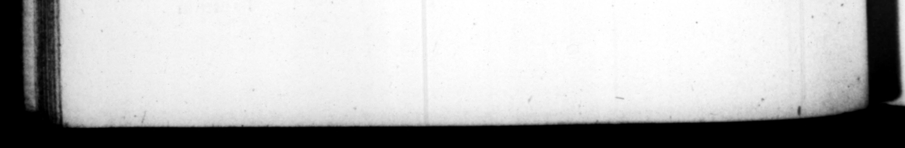

166 habitum fremens, Te Capreas quoquo modo deſtinavit non temere quidquam niſi ex tuto auſurus. Sed & tempeſtatibus & ingraveſcente vi morbi retentus, paulo poſt obiir in villa Lucullana, octavo & ſeptua geſimo mtatis anno, tertio & vigeſimo imperiiy decimo ſeptimo Kalend. Aprilis, Cn. Acerronio Proculo C. Pontio Nigro coſſ. Sunt qui putant venenum ei 3 Cajo datum lentum atque tabificum. Alii in remiſſione frituite febris cibum deſideranti negatum : nonnulli pulvinum inj ectum, cum extractum ſibi deticienti annulum mo reſipiſcens requiſiſſet. Se. neca eum fcribit, Intelle#a defectione, exemptum annulum quaſs alicui traditurum parumtenuiſſe : dein rurſus aptaſ15 digito, & compreſſa ſeniſtra manu jacuiſſe diu immobilem < ſubito vocatis miniſtris, ac nemine reſpondente, conſurrexiſſe, nec procul a lectulo deſicientibus viribus concidife. e. sUE Tr. ING more, than that they had been an named by the informer, complaining in 4 great chafe that be was treated with contempt, he reſolved at any rate to return to Capree, not daring ts . temp! any thing upon the occaſton, but in a place of ſecarity, But being getained by ſtorms, and the violence 4 bis diſtemper, that increaſed up m him, te med Joon after yin à country-[tat of Lucullus i, in the ſeventy eighth year his age, and the twenty thir s reign, upm the ſeventeenth of the calinds of April, when Cn, Acerromus Proculus and C. Pontius Niger were conſuls, Some are of opinion that be hai a firb poiſon given him by Cains, Others ſay, that ubm his calling fot meat in the intermiſſim of 4 fever he happened to be taken with, it was des med him. Others, that he was ſtifled by a pillow thrown upon him, at hit coming out of a ſmoon, and calling fur hu ring, tha: bad been taken from him in the fit. Seneca writes, Thar find: ing himſelf a going, he took his ring off his finger, and held it a while, as if he would deliver ut to ſome body ; but put it again upon his finger, and lay for ſome time, with his lett-hand graſp!d cloſe, and without ſt rring ; when ſud. denl y calling upon his attendants, and no body making anſwer, he roſe ; bur his ſtrength failing him, he fell down a little way from his bed. 74. Supremo natali ſuo Allinem Temenitem & amplitudinis & artis eximiæ allvectum Syracuſis, ut in bibliotheca novi templi po. neretur, viderat per quietem affirmantem ſibi, Nox prfſe ſe ah ipſo dedicart. Et ante pancos quam obiret dies, turris Phari terræ motu Capreis concidit. Ac Miſeni cinis e favilla & carbonibus, ad ca. lefaciendum triclinium illatus, exſtinztus, & jam diu frigidus exarſit repente prima velpera, atque in multam noctem pertinaciter luxit. 75. Morta ejus ita lætatus eſt populus, ut ad primum nuntium dilcurrentes, pars Tiberium in Jiberim clandtg 74. He had uton his laſt birth-day brought a large beautiful flatue Apollo at Temenus from Syracuſe, in order to ſet it up, in the library the new temple, that bad been for that God but dreamt that be eap— to him, and afſured him, that is ſtatue could not be erected by him, And a few day, before he died, the watch-tower of Capree fell down. Anil at Miſene, ſome embers and coals being bronght in to air his parlour, went out — were perfectih cold, but burſt out into a flame again in the evening, and continued burning very bright al late at night. 75. The people rejoyced ſo at bus death, that upon the firſt news of it they run np ing out ſome, Away with Ti and down the city, cerius, tent!
